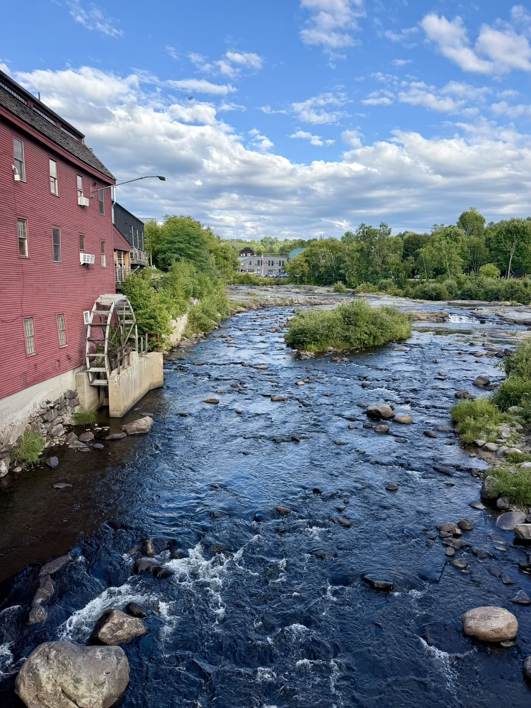
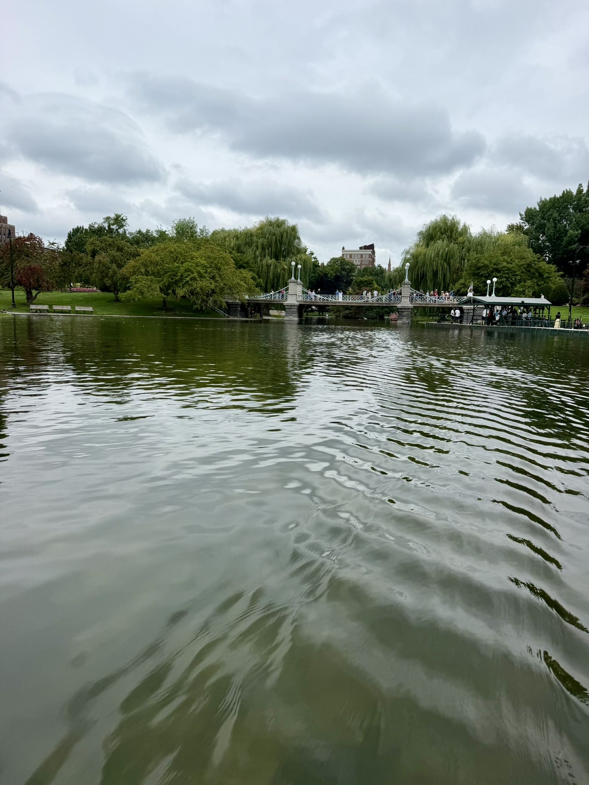
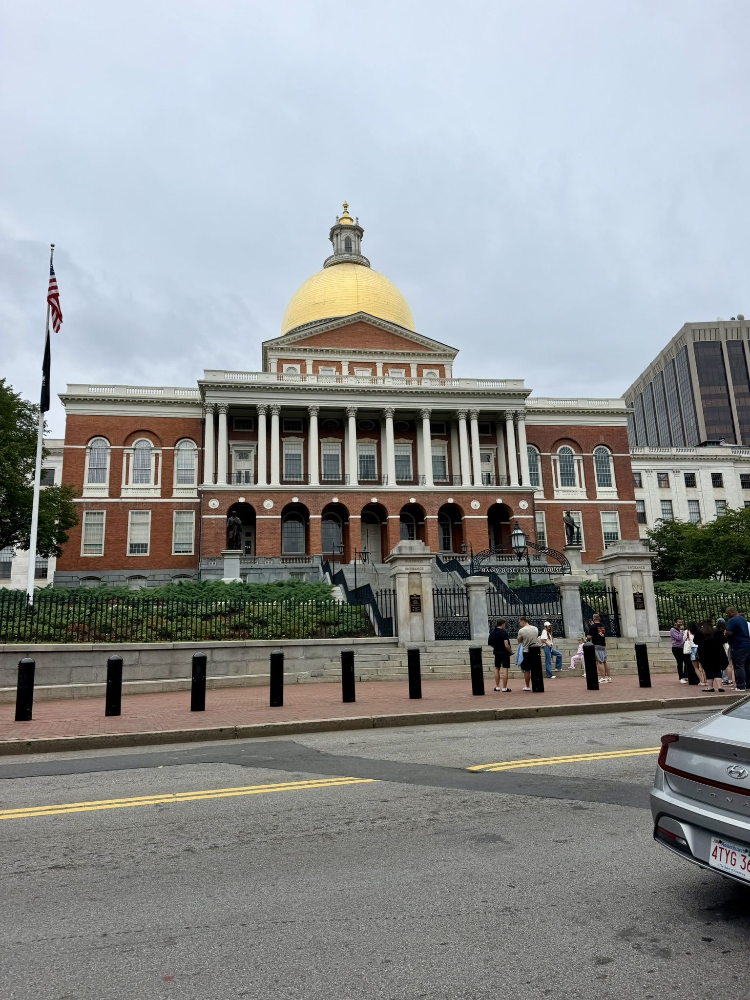
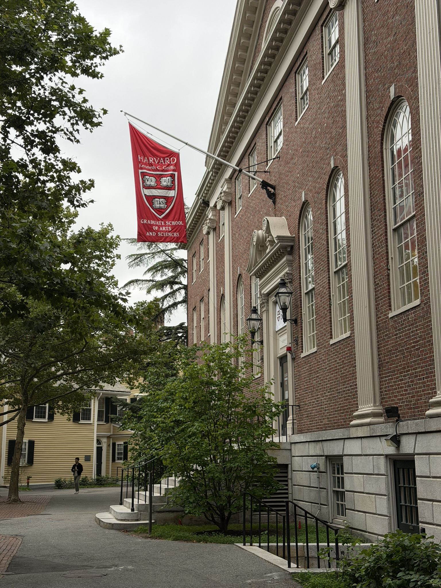
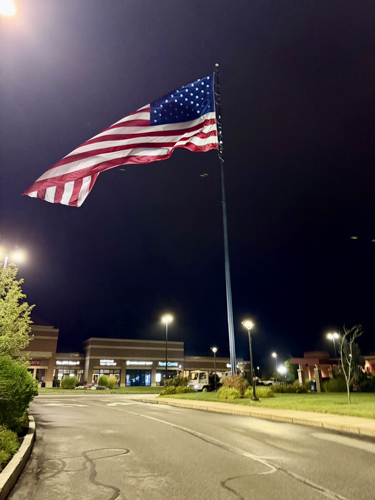
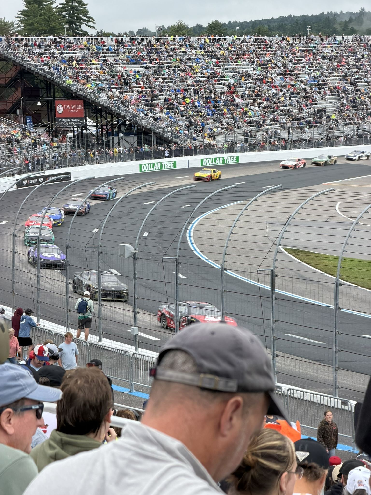

Semaine 8 : Boston, Harvard et NASCAR
Côté HyphTech
Le projet continue d'avancer globalement, rien de particulier à signaler cette semaine.
Le week-end : direction Boston
Cette fois, cap sur Boston, pour découvrir la ville. En chemin, quelques haltes en Nouvelle-Angleterre, avec ses paysages bien différents de ceux du Québec.

Une fois sur place, direction le centre-ville et ses jardins publics, puis un tour du côté du Massachusetts State House.


On a aussi pu découvrir l'université d'Harvard, un passage obligé vu la réputation du lieu.


Dimanche : course de NASCAR
Le dimanche, en tant que passionné d'automobile, on a pu assister à la Dollar Tree 301, une course de la NASCAR Cup Series, sur le circuit du New Hampshire. Une expérience vraiment sympa à vivre, et un truc bien américain qu'on ne voit pas souvent en France.
